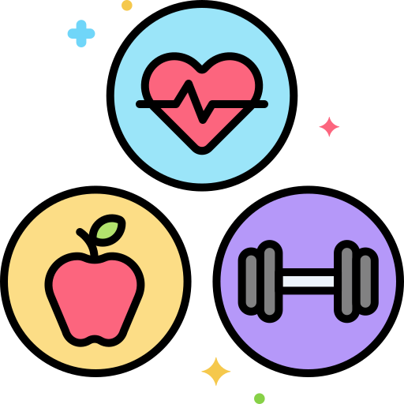

Research
Absent or irregular periods are almost a sign of hormonal imbalance. But, the cause isn't always the same. Understanding which hormones are involved is the first step to making the right lifestyle changes.
Multiple causes
PCOS is common, but thyroid issues, stress, and low body weight can cause the same symptoms.
Hormones are the key
Each cause disrupts a different hormone - identifying which one shapes the right approach.

Lifestyle matters
Diet, exercise, and sleep have measurable effects on hormonal balance, backed by research.
Common causes at a glance:
PCOS
Ovulation stalls due to excess androgens and insulin resistance.Thyroid disorder
Both hypo and hyperthyroidism can disrupt the menstrual cycle.Chronic stress
High stress suppresses estrogen, signalling the body to stop reproduction.Low body weight/underating
Energy deficiency shuts downs reproductive hormones as a protective response.
- TSH : Thyroid Stimulating Hormone,
- T3 : Triiodothyronine,
- T4 : Thyroxine,
- LH : Luteinizing Hormone,
- FSH : Follicle Stimulating Hormone.